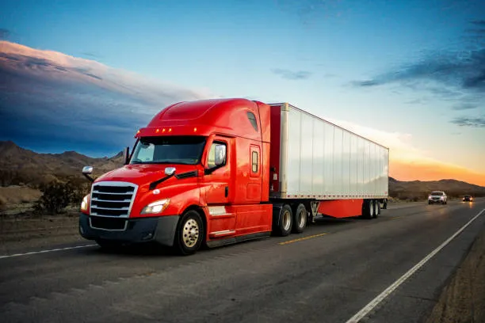
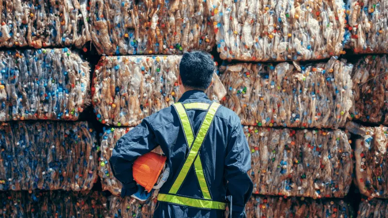

1. Extracció i Processament de Matèries Primeres

Avalua els impactes des de la captació de recursos naturals (mineria, agricultura, fusta) fins a la seva transformació inicial.
L'ACV és una metodologia avalada per les normes ISO 14040 i 14044 que permet quantificar l'impacte ambiental d'un producte, procés o servei al llarg de tot el seu cicle de vida.
Avalua els impactes des de la captació de recursos naturals (mineria, agricultura, fusta) fins a la seva transformació inicial.

Analitza l'energia consumida, les emissions i els residus generats durant el procés d'elaboració o ensamblatge del producte final.

Examina l'impacte ambiental derivat del transport del producte acabat fins als punts de venda.
Estudia els consums i emissions associades durant la vida útil del producte mentre s'utilitza.

Avalua l'impacte final del producte un cop rebutjat, considerant opcions com el reciclatge o l'abocador.